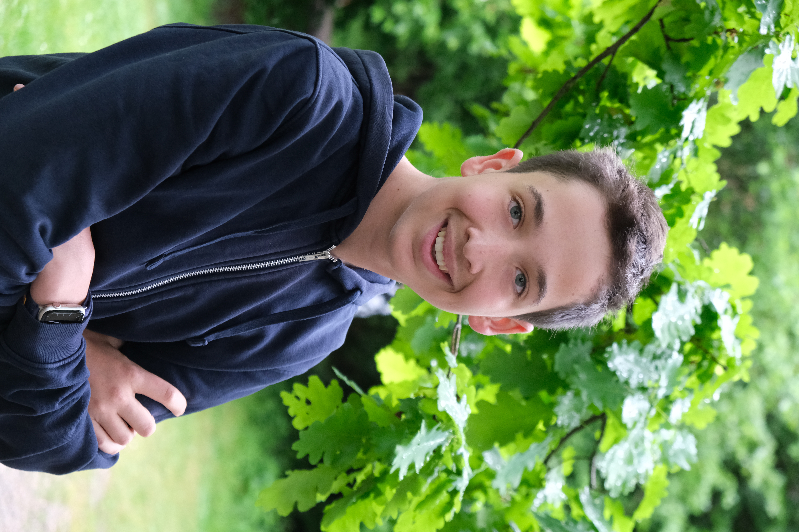

Jan Oliver Lässer
Mediamatiker · 1. Lehrjahr
Im ersten Lehrjahr als Mediamatiker lerne ich die Grundlagen der digitalen Kommunikation, Webdesign und Gestaltung. Dieses Projekt im Modul 287 ist mein erster grösserer Auftritt mit HTML & CSS.
Die Köpfe hinter diesem Projekt – Mediamatiker im ersten Lehrjahr.
Jan Oliver Lässer
Mediamatiker · 1. Lehrjahr
Im ersten Lehrjahr als Mediamatiker lerne ich die Grundlagen der digitalen Kommunikation, Webdesign und Gestaltung. Dieses Projekt im Modul 287 ist mein erster grösserer Auftritt mit HTML & CSS.

Janis Wyss
Mediamatiker · 1. Lehrjahr
Als angehender Mediamatiker beschäftige ich mich mit den visuellen und technischen Grundlagen des Webdesigns. Das Thema Schweizer Kantone liegt mir als Schweizer natürlich besonders am Herzen.
Mediamatiker und Mediamatikerinnen sind Fachleute an der Schnittstelle von Kommunikation, Gestaltung und Informatik. Sie planen und realisieren multimediale Projekte – von der Webseite bis zum Printprodukt.
Die vierjährige Berufslehre umfasst Themen wie Webentwicklung, Grafik- design, Marketing, Fotografie, Video und Administration.
Wir befinden uns aktuell im ersten Lehrjahr unserer Ausbildung zum Mediamatiker EFZ.
In diesem Lehrjahr legen wir die Grundlagen für unsere spätere Arbeit in der digitalen Kommunikation.
Dieses Projekt ist Teil des Moduls 287 – Websites mit CSS Gestalten. Das Ziel des Moduls ist es, professionelle, responsive Webseiten mit modernem CSS und einem CSS-Framework zu erstellen.
Im Rahmen dieses Projekts haben wir gelernt:
Wir hoffen, dass dir unsere Webseite über die Schweizer Kantone gefallen hat. Fragen, Anregungen? Sprich uns einfach an.